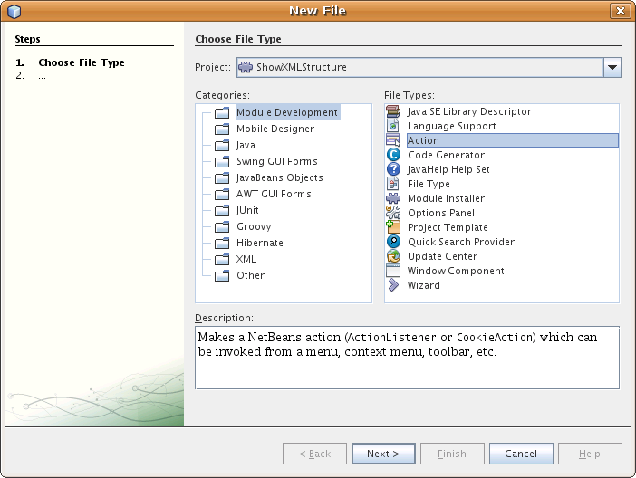

Apache NetBeans
Apache NetBeansLatest release
NetBeans XML Editor Extension Module Tutorial
| This tutorial needs a review. You can open a JIRA issue, or edit it in GitHub following these contribution guidelines. |
This tutorial demonstrates how to create a module that extends the functionality offered by one of the IDE’s editors. The IDE has several editors—for example, the XML editor, the Java editor, the JSP editor, and the SQL editor. Normally all the IDE’s editors are referred to collectively as the Source Editor. However, each of the editors is distinct—its functionality is targeted at the file type for which it exists. In this tutorial, you add an action to the XML editor. After you create and install the module, and you open an XML file, the editor’s contextual menu will include a menu item that displays the XML file’s tags in the Output Window.
| This document uses the NetBeans IDE 6.5 Release. If you are using an earlier version, see the 6.0/6.1 version of this document. |
Optionally, for troubleshooting purposes, you can download the completed sample.
Setting up the Module Project
Before you start writing the module, you have to make sure you that your project is set up correctly. The IDE provides a wizard that sets up all the basic files needed for a module.
Creating the Module Project
-
Choose File > New Project (Ctrl+Shift+N). Under Categories, select NetBeans Modules. Under Projects, select Module. Click Next.
-
In the Name and Location panel, type
ShowXMLStructurein the Project Name field. Change the Project Location to any directory on your computer. Leave the Standalone Module option and Set as Main Project checkbox selected. Click Next.
-
In the Basic Module Configuration panel, type
org.netbeans.modules.showxmlstructurein Code Name Base.
-
Select "Generate XML Layer". Leave the locations of both the localizing bundle and the XML layer file so that they will be stored in a package with the name
org/netbeans/modules/showxmlstructure. Click Finish.
The IDE creates the ShowXMLStructure project. The project contains all of your sources and project metadata, such as the project’s Ant build script. The project opens in the IDE. You can view its logical structure in the Projects window (Ctrl-1) and its file structure in the Files window (Ctrl-2).
Specifying the Module’s Dependencies
You will need to subclass several classes that belong to NetBeans APIs. Each has to be declared as a module dependency. Use the Project Properties dialog box for this purpose, as described below.
-
In the Projects window, right-click the
ShowXMLStructureproject and choose Properties.
-
For each of the following APIs, click "Add…" in the Libraries panel, select the name from the Module list, and then click OK to confirm it:
-
I/O APIs -
Nodes API -
Text API -
Utilities API -
Window System API
-
Click OK to exit the Project Properties dialog box.
In the Projects window, expand the Important Files node and double-click Project Metadata and notice that the APIs you selected have been declared as module dependencies.
Coding the Module
Creating the Action
-
Right-click the project node and choose New > Other. Under Categories, select Module Development. Under Projects, select Action, as shown below:

Click Next.
-
In the Action Type panel and click Conditionally Enabled. Select
EditorCookie, which is the name of the class that lets the Source Editor access the action, as shown below:

Click Next.
-
In the GUI Registration panel, select the 'Edit' category in the Category drop-down list. The Category drop-down list controls where an action is shown in the Keyboard Shortcuts editor in the IDE. Next, select Editor Contect Menu Item and then select the
text/xmlMIME type, as shown below:

Notice that you can set the position of the menu item and that you can separate the menu item from the item before it and after it. Click Next.
-
In the Name and Location panel, type
ShowXMLStructureActionas the Class Name and typeShow XML Structureas the Display Name. You should now see the following:

Menu items provided by contextual menus do not display icons. Therefore, click Finish and ShowXMLStructureAction.java is added to the package. The content of the file is as follows:
package org.netbeans.modules.showxmlstructure;
import org.openide.cookies.EditorCookie;
import org.openide.nodes.Node;
import org.openide.util.HelpCtx;
import org.openide.util.NbBundle;
import org.openide.util.actions.CookieAction;
public final class ShowXMLStructureAction extends CookieAction {
protected void performAction(Node[] activatedNodes) {
EditorCookie editorCookie = activatedNodes[0].getLookup().lookup(EditorCookie.class);
// TODO use editorCookie
}
protected int mode() {
return CookieAction.MODE_EXACTLY_ONE;
}
public String getName() {
return NbBundle.getMessage(ShowXMLStructureAction.class, "CTL_ShowXMLStructureAction");
}
protected Class[] cookieClasses() {
return new Class[]{EditorCookie.class};
}
@Override
protected void initialize() {
super.initialize();
// see org.openide.util.actions.SystemAction.iconResource() Javadoc for more details
putValue("noIconInMenu", Boolean.TRUE);
}
public HelpCtx getHelpCtx() {
return HelpCtx.DEFAULT_HELP;
}
@Override
protected boolean asynchronous() {
return false;
}
}-
In the Source Editor, rewrite the
performActionmethod as follows, after reading and understanding the comments in the code:
protected void performAction(Node[] activatedNodes) {
EditorCookie editorCookie = activatedNodes[0].getLookup().lookup(EditorCookie.class);
*//Get the tab name from the Bundle.properties file:*
String tabName = NbBundle.getMessage(ShowXMLStructureAction.class, "LBL_tabName");
*// "XML Structure" tab is created in Output Window for writing the list of tags:*
InputOutput io = IOProvider.getDefault().getIO(tabName, false);
io.select(); *//"XML Structure" tab is selected*
try {
*//Get the InputStream from the EditorCookie:*
InputStream is = ((org.openide.text.CloneableEditorSupport) editorCookie).getInputStream();
*//Use the NetBeans org.openide.xml.XMLUtil class to create a org.w3c.dom.Document:*
Document doc = XMLUtil.parse(new InputSource(is), true, true, null, null);
*//Create a list of nodes, for all the elements:*
NodeList list = doc.getElementsByTagName("*");
*//Iterate through the list:*
for (int i = 0; i < list.getLength(); i++) {
*//For each node in the list, create a org.w3c.dom.Node:*
org.w3c.dom.Node mainNode = list.item(i);
*//Create a map for all the attributes of the org.w3c.dom.Node:*
NamedNodeMap map = mainNode.getAttributes();
*//Get the name of the node:*
String nodeName = mainNode.getNodeName();
*//Create a StringBuilder for the Attributes of the Node:*
StringBuilder attrBuilder = new StringBuilder();
*//Iterate through the map of attributes:*
for (int j = 0; j < map.getLength(); j++) {
*//Each iteration, create a new Node:*
org.w3c.dom.Node attrNode = map.item(j);
*//Get the name of the current Attribute:*
String attrName = attrNode.getNodeName();
*//Add the current Attribute to the StringBuilder:*
attrBuilder.append("*" + attrName + " ");
}
*//Print the element and its attributes to the Output window:*
io.getOut().println("ELEMENT: " + nodeName +
" --> ATTRIBUTES: " + attrBuilder.toString());
}
*//Close the InputStream:*
is.close();
} catch (SAXException ex) {
Exceptions.printStackTrace(ex);
} catch (IOException ex) {
Exceptions.printStackTrace(ex);
}
}-
Add the display names to the
Bundle.propertiesfile:
LBL_tabName=XML StructureBuilding and Installing the Module
The IDE uses an Ant build script to build and install your module. The build script is created for you when you create the module project.
Installing the Module
In the Projects window, right-click the ShowXMLStructure project and choose Run.
The module is built and installed in the target IDE or Platform. The target IDE or Platform opens so that you can try out your new module. The default target IDE or Platform is the installation used by the current instance of the development IDE. Note that when you run your module, you will be using a temporary test user directory, not the development IDE’s user directory.
Using the Module
-
Choose File > New Project (Ctrl-Shift-N) and create a new project.
-
In the Files window (Ctrl-2), expand the project node and then expand the
nbprojectnode. Double-clickbuild-impl.xmlso that it opens in the Source Editor
-
Right-click anywhere in the Source Editor and notice the new popup menu item called "Show XML Structure". Choose the menu item and notice that the tag handler prints all the elements and attributes to the Output window, which is at at the bottom of the IDE, as shown below:

-
Open a different file type in the Source Editor. For example, open a Java class. Right-click anywhere in the Source Editor and notice that the new popup menu item is not included in the contextual menu. That is because the New Action wizard created the following entries for you, which cause the action to be available for XML files only:
<folder name="Actions">
<folder name="Edit">
<file name="org-netbeans-modules-showxmlstructure-ShowXMLStructureAction.instance"/>
</folder>
</folder>
<folder name="Editors">
<folder name="text">
<folder name="xml">
<folder name="Popup">
<file name="org-netbeans-modules-showxmlstructure-ShowXMLStructureAction.shadow">
<attr name="originalFile" stringvalue="Actions/Edit/org-netbeans-modules-showxmlstructure-ShowXMLStructureAction.instance"/>
<attr name="position" intvalue="1100"/>
</file>
</folder>
</folder>
</folder>
</folder>Creating a Shareable Module Binary
-
In the Projects window, right-click the
ShowXMLStructureproject and choose Create NBM.
The NBM file is created and you can view it in the Files window (Ctrl-2):

-
Make it available to others via, for example, the Plugin Portal.
Next Steps
For more information about creating and developing NetBeans modules, see the following resources:
Versioning
| Version | Date | Changes |
|---|---|---|
1 |
11 July 2005 |
Initial version |
2 |
27 September 2005 |
* Added Action wizard * Renamed from "NetBeans Tag Handler Plug-in Tutorial" to "NetBeans Source Editor Extension Module Tutorial". * Added issue 7 below. |
3 |
28 September 2005 |
* Renamed the tutorial, because 'Source Editor' doesn’t cover the SQL editor, which could also be extended using the steps in this tutorial. * Rewrote the introductory paragraph. |
4 |
11 June 2007 |
Worked through whole tutorial, and cleaned up, for 6.0, also changed screenshots. |
5 |
17 November 2007 |
Fixed spacing between steps. Tried out the attached sample, and it works as described. |
6 |
1 November 2008 |
Updated to 6.5: badge, table, etc. But also vastly simplified the tutorial, by using the NetBeans XMLUtil class, thus was able to remove a whole section and a lot of code. |
| Issue Number | Description | Status |
|---|---|---|
1 |
Code and tutorial itself need to be reviewed. |
To be fixed. |
2 |
Tutorial needs to be updated once Phase III and IV are complete. |
Done. |
3 |
Some APIs used in this tutorial have deprecated methods. This will produce errors in the Output window, but should not impact functioning of module. |
To be fixed. |
4 |
Clear explanations — and links to Javadoc — to be added for all APIs, classes, and methods. Also Javadoc links for each of the dependencies and why they are needed in this tutorial. |
To be fixed. |
5 |
Maybe other identifiers for JSP editor, HTML editor, etc. should be mentioned. For example, instead of "xml" (in layer.xml), use "html", "x-properties", "base" etc. |
To be fixed. |
6 |
Explain what a cookie is. Explain what a cookie action is. |
To be fixed. |
7 |
Need to change downloadable, because currently the tag handler and the show XML action are separate files while in the downloadable code, they’re in the same file. For the same reason, must change screenshots where one file instead of two are shown. |
Done. |